Faculty
Mohinder. P. Sachdeva (M.Sc., Ph.D, LL.B) Professor & HEAD 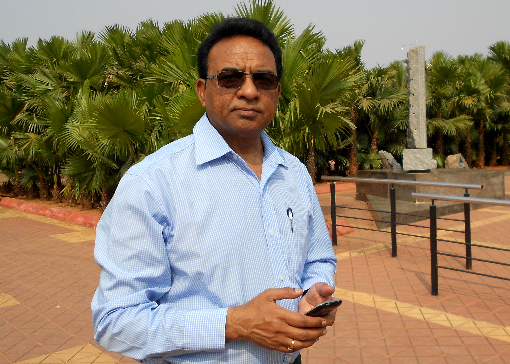
|
Prof. Sachdeva has received his training in anthropology from Panjab University,
Chandigarh where he was awarded the Panjab University Gold Medal and Bureau of Police Research and Development, Ministry of Home
Affairs Fellowship to pursue his doctoral research. He specializes in Human population genetics, Molecular genetics and Forensic
anthropology and has been teaching papers on Population genetics, Forensic anthropology, Serology, Palaeoanthropology, Biochemical
genetics, Human biological diversity, Ethnic and cultural diversity since 1986 to both undergraduate and post graduate students.
He has completed and is pursuing several research projects in Population genetics and molecular anthropology, funded by DBT,
DST and UGC. He has successfully supervised 18 doctoral works in addition to several M.Phil dissertations. He is a member of
many academic bodies and in editorial board of national and international journals.
|
||
| P.C. Joshi (M.Sc., M.Phil., Ph.D) Professor 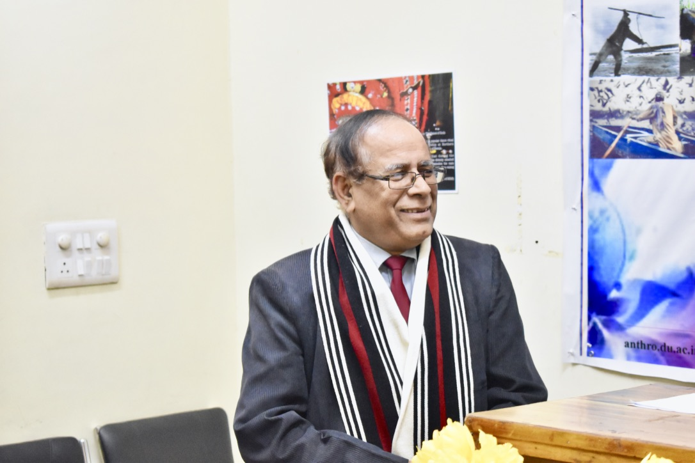
|
Prof. P. C. Joshi is currently the Vice-Chancellor of University of Delhi. He was the head of Department of Anthropology,
University of Delhi before becoming the PVC of University of Delhi in June 2020.
He has also served as head of the Department of Anthropology in various institutions.
He was nominated Asia Coordinator of the European Union
6th Framework Microdis Integrated Project, 2007 and was a delegate of the European Union to Poznan, Poland in United Nations
Framework Climate Change Conference in 2008. Prof. P. C. Joshi is recipient of the Indira Priyadarshini Vriksha Mitra National
Award as Friends of Trees founder member, 1987 and the Inter-University Centre Associateship Award in Humanities and Social Sciences,
1996-1999, Certificate of Honour at the First France-India Meet on Psychiatry, Psychoanalysis and Psychotherapy, 2007, Plaque of
Appreciation from Department of Sociology and Anthropology, Xavier University Ateneo de Cagayan de Oro City, Philippines, 2008,
and Certificate of Appreciation on his research on disaster impacts in Asia and Europe by Faculty of Public Health, University of
Indonesia in 2009, among other honours and distinctions.
He is the current UGC SAP Advisory Committee Member for the SV University, Tirupati and Karnataka University Dharwad.
He has been recently nominated as the Task Force Member, Department of Biotechnology, Government of India. He has organized Fifteen
Conferences included one in the University of Hue, Vietnam in the year 2010. He is the current president of the Society for Indian
Medical Anthropology, Mysore and Executive Member of the Ethnographic and Folk Culture Society, Lucknow. His scientific publications
are in the fields of Medical Anthropology, Traditional Medicines, Shamanism, Impact of Disasters, Life Style Diseases and Antibiotic
Resistance. |
||
Soumendra Mohan Patnaik (M.Sc., M.Phil, Ph.D) Professor 
|
Prof. Patnaik has been teaching Social Anthropology for more than two decades.
He was a Fulbright –Nehru Visiting Lecturer at VT Institute for Policy and Governance /Urban Affairs and
Planning Virginia Tech University, USA (August 2011 to Jan 2012). He was also visiting faculty to many universities both home and abroad.
He is currently the President of Indian Anthropological Association. He now heads a commission on
Policy and Governance in the International Union of Anthropological and Ethnological Sciences (IUAES).
Currently he is the Convener of Research Committee, Rural, Peasants and Tribal Commission.
He is also the Director of Publication of Ethnographic and Folk Culture Society.
He is a member of Editorial Board of the Asian Anthropology, a journal published by the Hongkong Anthropological Society.
He is the Chairman, Governing board of Lakshmibai College, University of Delhi; Treasurer/member,
Governing Board of Shaheed Rajguru College for Applied Sciences for Women, University of Delhi.
|
||
Prakash Ranjan Mondal (M.Sc., Ph.D) Professor 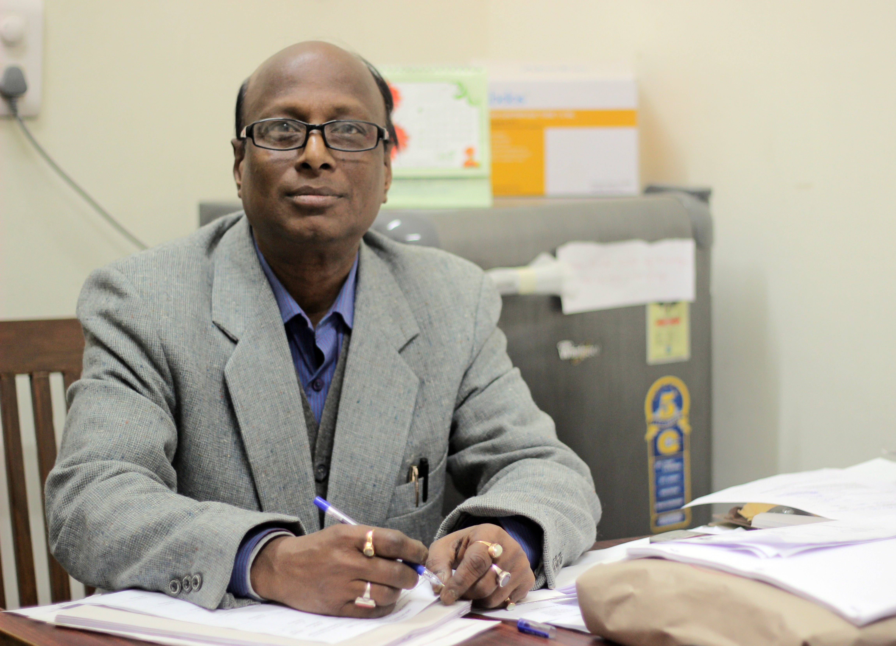
genomic studies (Molecular Anthropology) |
Prof. P R Mondal was trained in Anthropology in University of Kolkata and University of Delhi
with a specialization in Physical Anthropology. Prior to joining Department as an assistant professor, he has worked
as research assistant in an Indo-German Project and then in Nutrition Foundation of India. He teaches papers on Primatology,
Human origins & variations, Paleoanthropology and Molecular Anthropology, Dermatoglyphics to undergraduates and postgraduates.
|
||
Manoj K. Singh (M.Sc., Ph.D) Professor 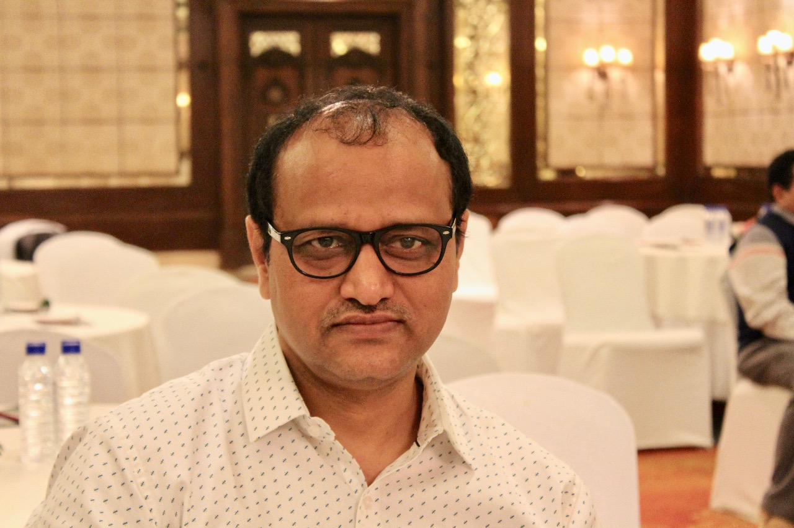
|
Prof. Manoj Kumar Singh received his training in Anthropology from Gossner College, Ranchi and
University of Ranchi. He earned his doctorate in Archaeology from University of Delhi in 2002 and has subsequently been teaching archaeological
anthropology and paleoanthropology at Department of Anthropology in University of Delhi as an assistant professor. He has also been serving as
deputy proctor of University of Delhi since 2013. Dr. M.K.Singh has been recently elected as the President of the Section of Anthropological and
Behavioural Sciences at the 108th Session of INDIAN SCIENCE CONGRESS.
|
||
K N Saraswathy (M.Sc., M.Phil, Ph.D) Professor 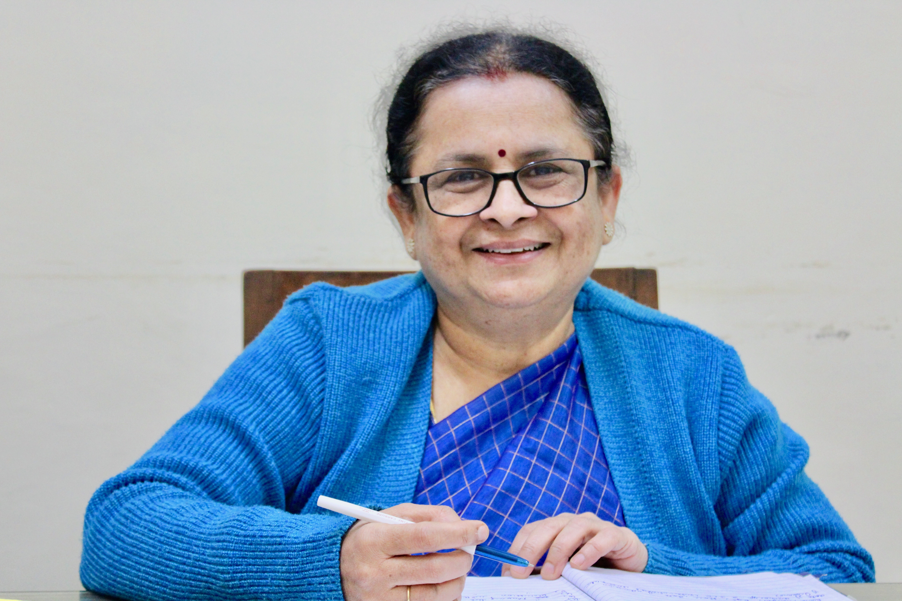
|
Prof. K N Saraswathy completed her postdoctoral research in Molecular
Genetics from Albert Einstein College of Medicine, New York, USA. Prior to joining the department in 2002, she worked at Amity institute of biotechnology.
She currently teaches papers on Population Genetics, Biochemical Genetics,
Human Biological Diversity, Ethnic and Cultural Diversity, Techniques in Human Genetics to Undergraduates and postgraduates.
She has also been the principal and co-principal investigator in several projects in the field of molecular and genetic anthropology
based in the molecular anthropology laboratory in the Department.
|
||
R. P. Mitra (M.Sc., M.Phil, Ph.D) Professor 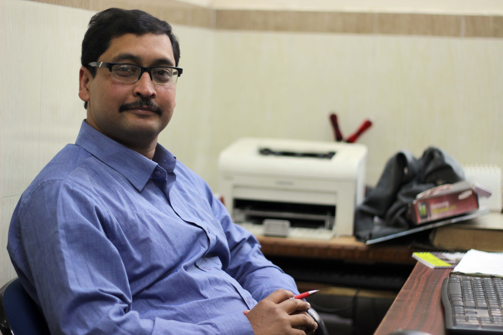
|
Prof. R. P. Mitra was trained in social anthropology at University of Delhi
and teaches Introduction to Social anthropology, Social Institutions, Ethnic and Cultural Diversity of India,
Tribe and Peasantry in India, Psychological Anthropology, Anthropological Theories, Religion and Symbolism
and Ecological anthropology to undergraduates and postgraduates. Prior to joining the department as an assistant
professor in 2003, he has worked as a research fellow in Institute of Human Behaviour and Allied Sciences (IHBAS).
He has completed a research project on Evaluation of Conservation-cum Development Plan for the Bharia community of
Madhya Pradesh. (Period: 2008-2010)funded by Department of Tribal Welfare, Government of Madhya Pradesh and
currently investigating a project on Crime against women in India (Period: 2011 – Ongoing) funded by BPRD,
Ministry of Home Affairs. Government of India.
|
||
Benrithung Murry (M.Sc., Ph.D) Professor 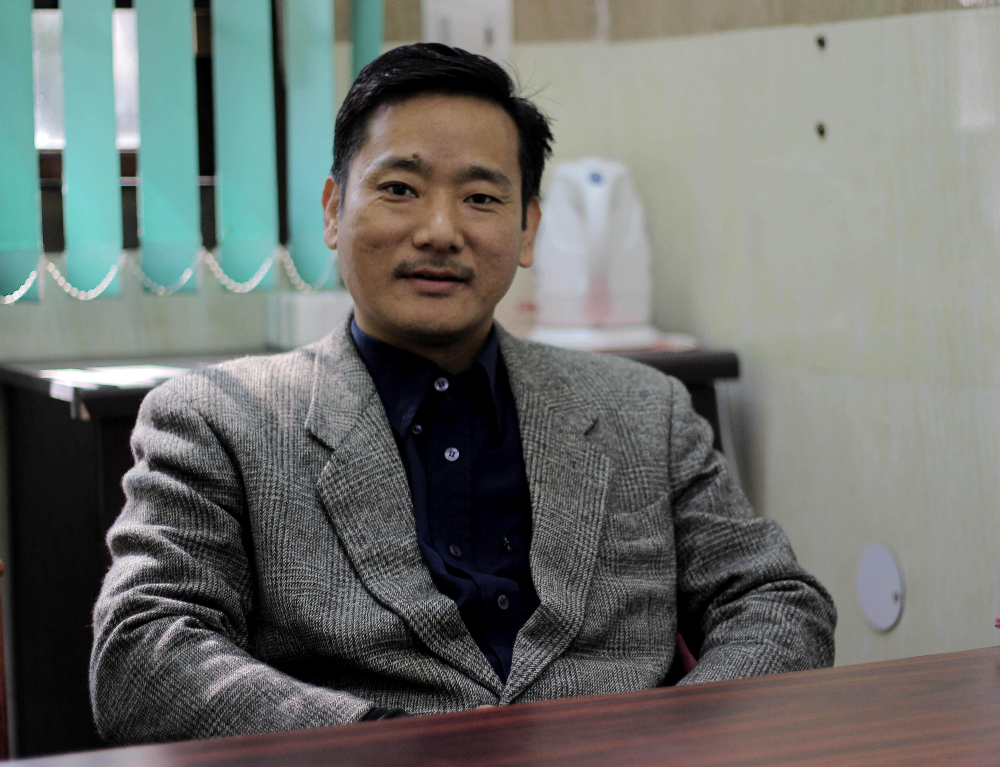
|
Prof. Benrithung Murry was trained in anthropology in North Eastern Hill University, Nagaland University and University of Delhi with a specialization in physical anthropology. Prior to joining the department in 2004 as a lecturer, he worked in the capacity of Research Officer at Law Research Institute, Gauhati High Court and as Guest Lecturer in the Department of Anthropology, North Eastern Hill University. He has also served as the Resident Tutor in Jubilee Hall, University of Delhi during 2008-2009. He teaches papers on Human Evolution and Variations, Human Genetics, Demography and Biodiversity and also supervises research students.
|
||
Avitoli G Zhimo (M.Sc., M.Phil, Ph.D) Associate Professor 
|
Dr. Avitoli G Zhimo has been teaching social anthropology at the
University of Delhi since January 2009. She received her Master’s degree, M.Phil degree and PhD from the University of Delhi.
She teaches Media Anthropology; Development Anthropology; Gender and Society; Tribal cultures of India; Anthropological Theories; Visual Anthropology; Social Institutions.
She had worked extensively among the Naga tribes exploring the politics of conversion and the dynamics of customary law.
She had also attempted to capture the changing realities among Naga tribes in the era of globalization. Her research papers
had been published in reputed peer-reviewed journals. She is responsible for establishing Visual Anthropology Lab in the department. Currently she is also holding the position of Assistant Director, Centre for the Himalayan Studies, University of Delhi. Full CV
|
||
Vipin Gupta (M.Sc., Ph.D) Associate professor Wellcome Trust/DBT India Alliance “Intermediate fellow” 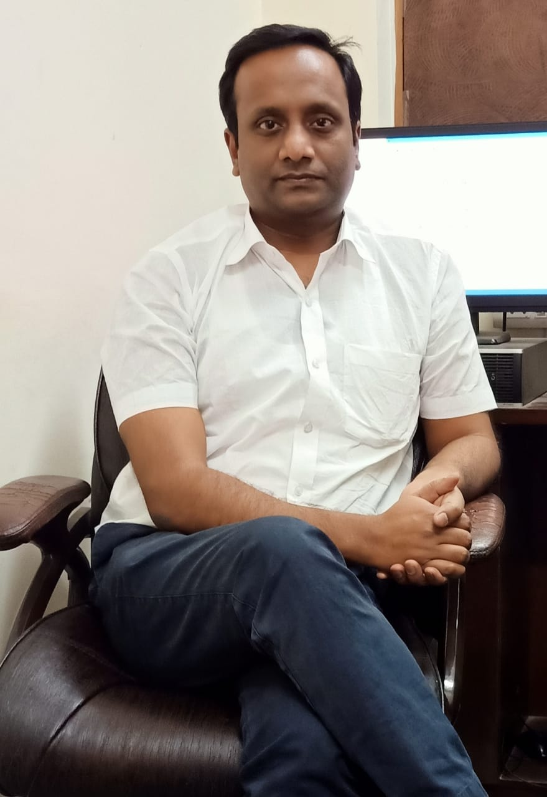
|
He has been teaching in Department of Anthropology since 2013, and has research interest
in lifecourse epidemiology, public health and genomics. He established the
laboratory in Public Health in Department and introduced paper of Epidemiology and
Public Health for M.Sc. Anthropology course. From last 10 years, he is consistently
involved in large scale research projects related to determination of genetic variants
for cardiometabolic traits. To date he has received research grant of INR ~8 crores
from different funding agencies, like, DBT, ICMR, UGC, SERB, and Wellcome Trust,
UK. He has published >70 research articles in reputed national and international
journals with >12000 citations and h-index of 20 (reference: Google Scholar). In
collaboration with LSHTM, UK, he has established a large inter-generational cohort
i.e. “Andhra Pradesh Children and Parents Study” (APCAPS), and developed Dry
blood spot based large bio-bank. He has also initiated “COPD genetics Consortium”
in collaboration with leading Indian pulmonologists. In 2017, he was awarded the
most prestigious Wellcome Trust-DBT India Alliance “Intermediate Fellowship” for
conducting research on maternal and child health in India for next 5 years using
which he is developing “GaRBH cohort” in Rajasthan. He has conducted variety of
anthropological fieldworks in different caste and tribal populations and has fair
experience of running consortiums in India.
|
||
Chakraverti Mahajan (M.Sc. Hons., Ph.D.) Assistant Professor 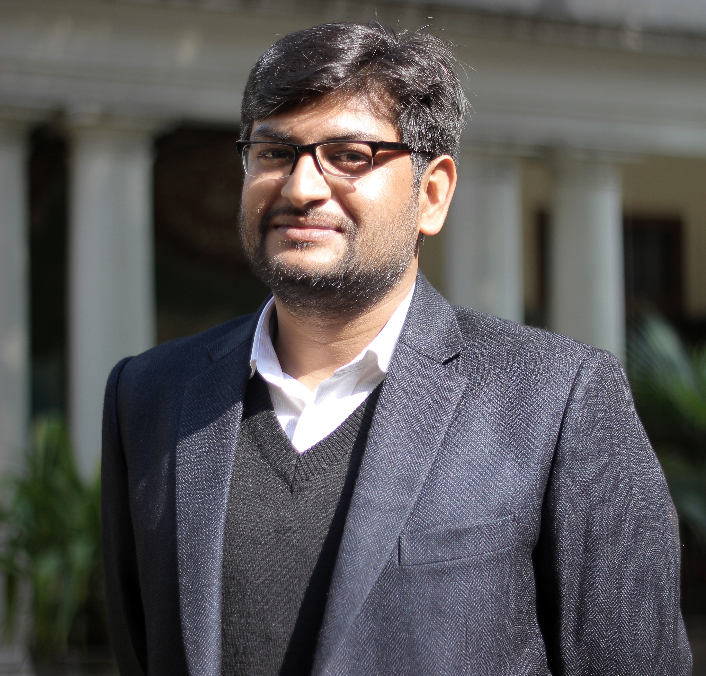
|
Dr. Chakraverti Mahajan was trained in social anthropology at Panjab University.
His PhD thesis titled “Exploring the contours of Hindu- Muslim relations in Doda district, Jammu and Kashmir:
an anthropological study” focuses on unravelling the complex dynamics of inter-religious identities and interactions
amidst a political backdrop of violence and suspicion in Jammu and Kashmir. He has been teaching papers on Fundamentals
of Social Anthropology, Theories of Society and Culture, Urban Anthropology, Criminology, Anthropology of India,
Research Methods, and Reading of Ethnographies since 2011 and has joined the department as an assistant professor in 2013.
|
||
Mitashree Srivastava (M.Sc., D.Phil) Assistant Professor 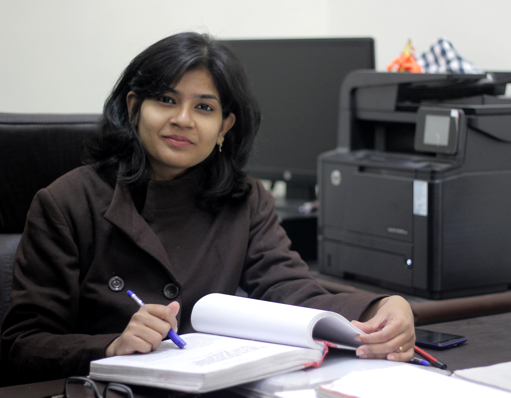
|
Dr. Mitashree Srivastava is an assistant professor of social anthropology.
She was educated and trained in social anthropology at University of Allahabad.
Her thesis explored the evolution of Bodh Gaya as a sacred complex focusing on the
Study of religion emphasizing narrative and discourse analysis in relationship to
constructions of religious identities in South Asian globalizing contexts.
She has perennial interest in finding out the significance of trans-nationalization
in shaping up experiences and interpretations of what constitutes "authentic" Buddhist identity / Collection,
description, and analysis of Narrative histories and testimonials of becoming Buddhist in order to explore
the relationship between religious experience and identity formation in 21st century South Asia.
She currently teaches Anthropology of Religion, Politics and Economy, Human Ecology: Social -Cultural Dimensions,
Ecological Anthropology, Anthropology of Development, Anthropology of Religion and Symbolism and Anthropological Theory,
Psychological Anthropology.
|
||
Shivani Chandel (M.Sc., Ph.D) Assistant Professor
|
After completing her doctorate in anthropology from University of Delhi in 2012,
Shivani Chandel joined the department as an assistant professor in 2013.
She has recently completed a project titled “Occupational health of farm workers of Uttar Pradesh”
funded by University of Delhi Research council. She teaches papers on Introduction to biological anthropology,
biological diversity in Indian population, human ecology: biological dimensions, human growth and development, physiology,
kinanthropometry and ergonomics and medical anthropology to Undergraduates and Postgraduates.
|
||
Meenal Dhall (M.Sc., Ph.D) Assistant Professor 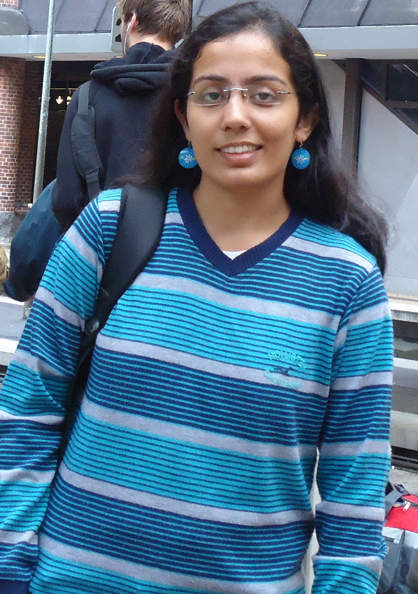
|
Dr. Meenal Dhall is presently an Assistant Professor in Department of Anthropology, University of Delhi,
Delhi. She did her doctoral degree in 2013 on pattern of physical activity and metabolic syndrome among adults of Delhi. She was University
Teacher Assistant during her Phd in Department of Anthropology, University of Delhi. She has received post graduate diploma in public health
nutrition from PHFI, Delhi in 2011. She has been actively working on public health problems especially obesity and cardio metabolic disease;
nutritional status, physical activity and its related health outcome among different populations. She has seventeen international and national
publications in this field.
|
||
Moiranthem Kennedy Singh (M.Sc., M.Phil, Ph.D) Assistant Professor 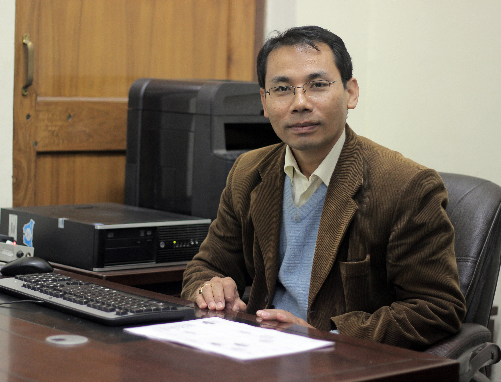
|
Dr. M. Kennedy Singh was educated in Manipur University and University of Hyderabad. He has previously worked as a consultant faculty in National Institute for Micro Small and Medium Entreprise, Hyderabad, Govt. of India and faculty member in Centre for Rural Studies, NIAR, Lal Bahadur Shastri National Academy of Administration Massoorie before joining Department of Anthropology, University of Delhi as an assistant professor. He currently teaches papers on Research Methodology, Urban Anthropology, Anthropological theories of Society and Culture, Anthropological Theory, Reading of Ethnography, Indian Tribes, Psychological Anthropology, Material Culture.
|
||
Naorem Kiranmala Devi (M.Sc., Ph.D) Associate professor 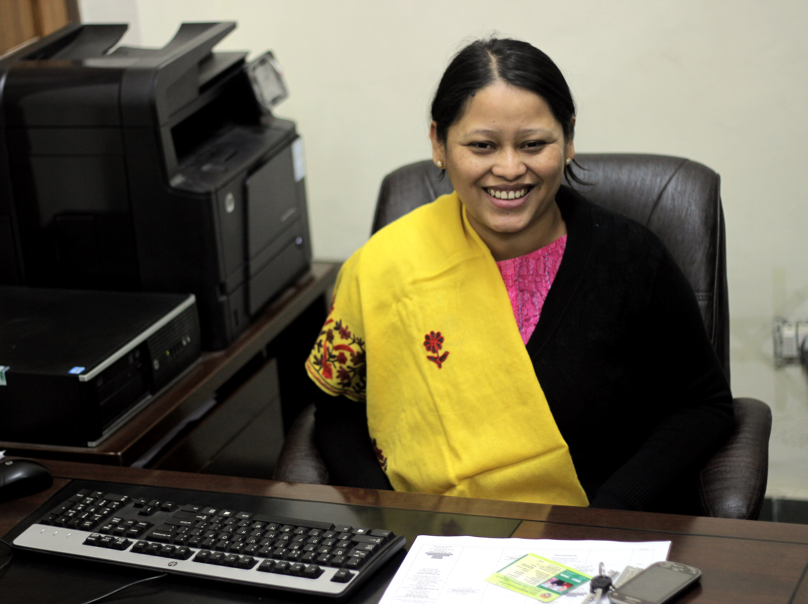
|
Prior to joining Department of Anthropology as an Assistant Professor in 2013, Dr. Kiranmala worked as a research officer in the INCLEN Trust International, New Delhi. She teaches papers on Paleoanthropology, Primate Biology, Biochemical Genetics, and Human origin and variation in addition to supervising students of M.Phil and PhD.
|
||
Suniti Yadav (M.Sc., Ph.D) Assistant professor 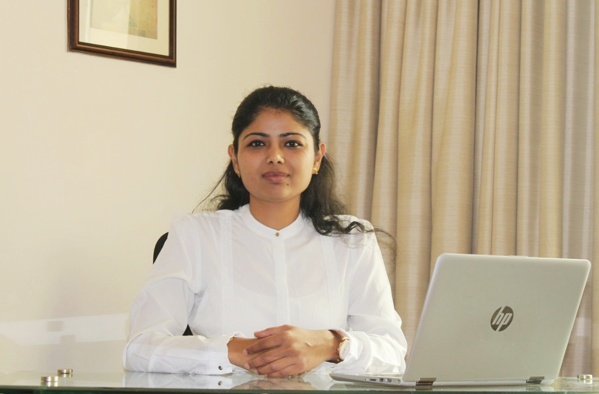
|
|